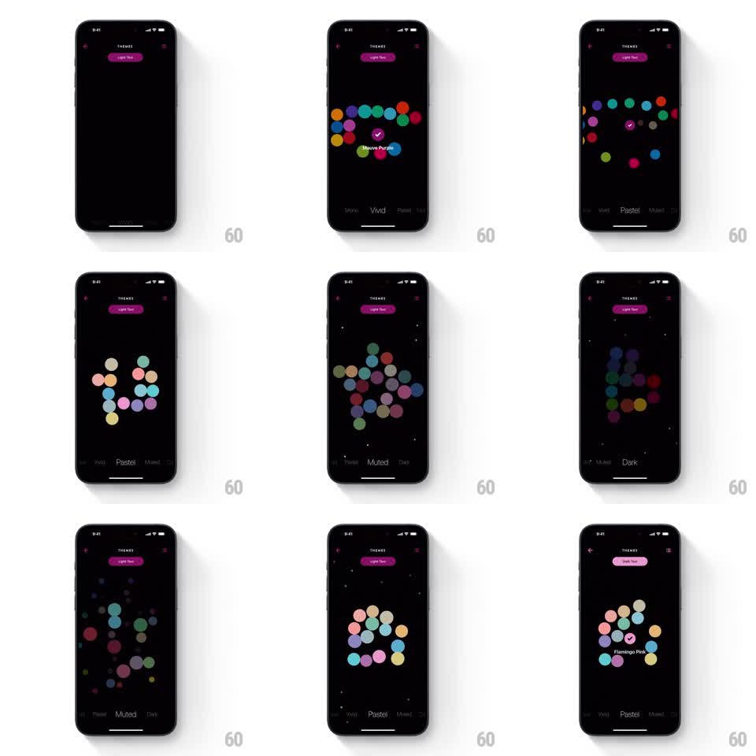

Media
Frame-by-frame

Rebuild this interaction 1:1: Timepage's theme picker - floating color swatches that scatter and regroup organically as you page through theme categories.

Rebuild this interaction 1:1: Timepage's theme picker - floating color swatches that scatter and regroup organically as you page through theme categories. Note: the pipeline's first-pass footage for this slug was a wrong video (Rain Alerts); the prompt is written for the corrected per-shot footage (Gumlet poster-asset video). ## Integration Integration: stack-agnostic spec - springs given as stiffness/damping, timed motions as duration + curve; map every value to your framework and animation library of choice. ## Scene A dark theme-gallery screen: a loose constellation of circular color swatches floats center, with the theme category name below (and paging dots). Swiping to the next category sends the current swatches scattering off while the new palette's swatches drift in and gather into formation. ## Motion spec Pattern: scatter-and-regroup swatch constellation. - Swipe horizontally (1:1 gesture): the category label slides with the finger; on commit the outgoing swatches scatter - each flies off along its own trajectory with slight rotation and scale-down (spring ~240/20, randomized directions, 20ms stagger). - The incoming palette's swatches drift in from off-screen and settle into their constellation slots (spring ~260/24, 30ms stagger), bobbing once as they land. - At rest the constellation idles with a gentle per-swatch float (translate +-4px, phase-offset 3-5s loops). - Tap a swatch: it pops (scale to 1.2 and back, spring ~420/22), gains a check ring, and the app's accent preview (header text, dots) retints to the swatch color over 250ms. - The category label crossfades and slides in the swipe direction (200ms). ## Calibration - Scatter paths are deterministic per swatch - the same palette always scatters the same way. - Constellation slots never overlap; the layout is a fixed organic arrangement, not a grid. ## Reduced motion Swatches fade between categories; selection retints without pop. ## Don't miss - The regroup should feel like magnets catching, not a slideshow - staggered springs, not simultaneous fades. - The selected swatch's color immediately appears in the screen's own UI; the picker previews on itself.